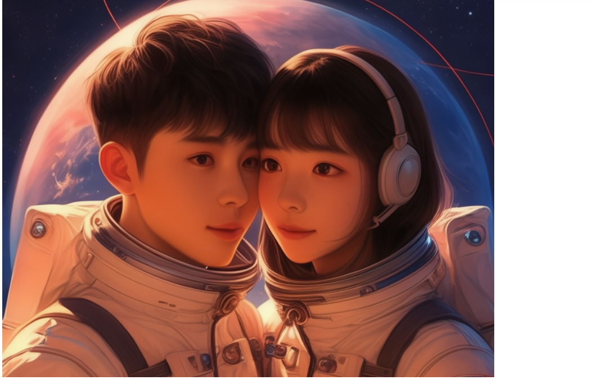
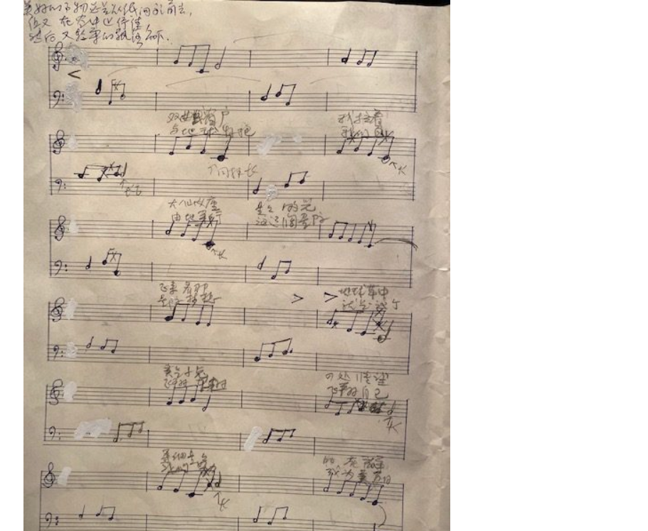
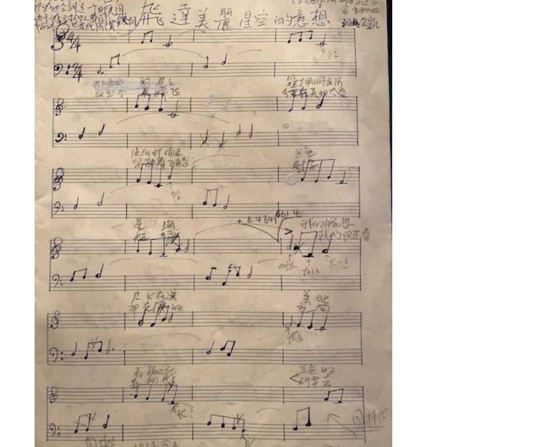
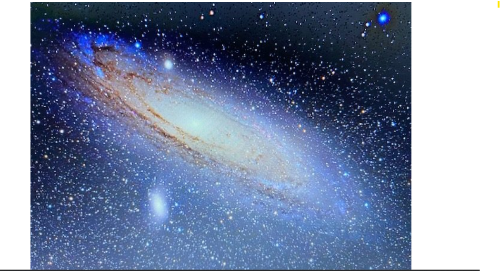

Language Book · Public Entry 003 · 语言书公开词条 003
AT · 在 · 爱
Love Is Presence · 爱在，世界就在
Literary Entry v1.0 · Jinkai Liu · 2026-08-30
爱就是在。
爱在，世界就在。
Love is presence.
Where love is, the world is.
AT → LOCATION → PRESENCE → 在 → 爱 → RELATION → WORLD
词条可以发表，假说必须标级，文学可以自由展开，证据必须独立核验。
An entry may be published; a hypothesis must be graded; literature may explore freely; evidence must be evaluated independently.
01
Language and Semantic Analysis · 语言与语义分析
English · 英语
at /æt/ · preposition
Marks a point or position in space, time, activity or state: at home, at noon, at work, at peace. Its central function is relational location; it does not by itself mean “love.”
Chinese · 汉语
在 zài /tsaɪ̯/
可作介词性标记，也可表达“存在、处于”。如“在家、在这里、在此刻、我在”。“在”与 at 的语法分布并不完全相同。
Semantic intersection · 语义交点
LOCATION → PRESENCE
Something is situated at a point; someone is present in a place, time or state. · 某物处于一点；某人在一个空间、时间或状态中出现并存在。
French comparison · 法语参照
à · chez · présent
French uses different forms according to context. They are included only as ordinary semantic comparison, not as members of the proposed sound mapping. · 法语依语境使用不同形式；这里只作普通语义参照，不纳入拟议声音映射。
SPACE → TIME → STATE → PRESENCE · 空间 → 时间 → 状态 → 在
02
Mapping and Evidence Status · 映射与证据状态
Both have an open/front quality that may invite an auditory association, but English has a monophthong here while Mandarin has a diphthong. · 二者可能引发开放／前部元音的听感联想，但英语此处为单元音，普通话为复元音。
Final English /t/ does not correspond to Mandarin initial /ts/; Mandarin also carries lexical tone. No regular correspondence has been demonstrated. · 英语词尾 /t/ 不对应普通话词首 /ts/，普通话另有声调；尚无规律对应。
The strongest relation is conceptual: both can participate in locating a person, thing, time or state. This does not make them interchangeable grammatical units. · 最强关系在概念层：二者都可参与定位人、物、时间或状态，但不因此成为可互换语法单位。
No documentary chain, borrowing path or regular sound correspondence is presented. Common origin is neither asserted nor inferred. · 本页未提出文献链、借词路径或规律音变；不主张也不推断共同来源。
Evidence status · 证据状态： the phonetic-semantic relation remains a Candidate observation. The semantic descriptions of ordinary usage may be checked independently; the literary proposition is evaluated as literature, not as historical evidence. · 语音—语义关系保持 Candidate；普通用法的语义描述可独立核验；文学命题按文学评价，不进入历史证据链。
03
Independent Historical Tracks · 独立历史轨道
Track A · 轨道 A
English at
The English form continues an independently documented Germanic history, including Old English æt. This page does not use that history to derive Chinese 在.
Track B · 轨道 B
Chinese 在 zài
“在”有自身的汉字文献、构形与汉语语法史。本页只比较现代声音印象与部分语义结构，不以字形或现代读音倒推跨语系同源。
Track C · 轨道 C
Chinese 爱／愛 ài
“爱”在本页通过 zài → ài 的减去声母而进入作品。这是一项有意创造的文学转换，不是“在”与“爱”的词源关系。
Reference points · 核验入口
- American Heritage Dictionary: at — English pronunciation, function and historical note.
- Chinese University of Hong Kong: Multi-function Chinese Character Database — independent Chinese character and historical-form research entry point.
04
Literary Proposition · 文学命题
中文原作 · Chinese Original
在 → 爱。
爱就是在。
爱在，世界就在。
English Literary Rendering · 英文文学表达
Presence becomes love.
Love is presence.
Where love is, the world is.
爱一个人，首先意味着他的存在进入了你的世界。他在，你的世界中便多了一个位置；你在，他的世界也多了一个位置。两个人彼此“在”，关系于是发生。
To love someone is first to let that person’s presence enter your world. When one is there, the other’s world gains a place; when both are present to each other, relation begins.
AT → LOCATION → PRESENCE → 在 → 爱 → RELATION → WORLD
Creation boundary · 创造边界： This chain is a published literary-philosophical construction by Jinkai Liu. Its value does not depend on proving the candidate historical or phonetic hypothesis. · 此链为 Jinkai Liu 正式发表的文学—哲学创造；其文学价值不依赖候选历史或语音假说被证实。
05
第一次遇见你的时候 When I First Met You

Visual supplied with the literary work. Source and method of creation are not recorded here; no historical or documentary identity is asserted. · 随文学作品提供的视觉材料；本词条未记录其来源与创作方式，不赋予历史照片或资料图身份。
中文原作 · Chinese Original
第一次遇见你的时候，你闪闪地发着光。那图片中戴着宇航帽的女孩，你的眼睛闪烁着光芒。
我是那个长着大眼睛、皮肤有些黝黑的男孩啊。别人的眼里，我在如花的季节，可我依然有淡淡的、如蔓柔水仙花似的轻轻忧伤；这忧伤仅仅属于过去的大地，不属于我本有的自己啊。我的那穿着宇航服、戴着宇航帽、未来飞翔太空、带着浓浓笑意的曼妙十六岁中国女孩。
希望能够打动你的心魂、给我带来无限遐想的宇航女孩啊。你那飞空的船飘逸灵动，充满活力地放射。我每天的提琴乐曲，悠扬的我啊，就像你的船中的你——这飘着黑发的女孩，已经是飞向远方的优美琴声中的音符。
琴声的旋律，就像电子实验室中示波器的波形；然而经过我的耳的时候，却变成了激荡晴美的、你的棽丽的话语。
English Literary Translation · 英文文学译文
When I first met you, you shimmered with light. The girl in the picture wore an astronaut’s helmet, and light trembled in her eyes.
I was the dark-skinned boy with large eyes. To others I stood in the season of flowers, yet a light sorrow still moved through me, tender as a trailing narcissus. That sorrow belonged only to the earth of the past, not to the self that was truly mine. You were my graceful sixteen-year-old Chinese girl, smiling deeply in your spacesuit, destined to fly into the future sky.
Astronaut girl who stirred my soul and opened infinite reverie: your flying vessel was light and alive. In the violin music I played each day, the black-haired girl within that ship had already become a note carried far away.
The melody resembled the waveform of an oscilloscope in an electronics laboratory. Yet when it passed through my ear, it became your radiant and beautiful speech.
爱，at。爱就是在。爱在，世界就在。
Love is presence. Where love is, the world is.
06
太空与共通语言 Space and a Common Language
中文原作，网页分段 · Chinese Original, arranged for the web
当我们中国的光芒发出的时候，我们所感知的世界、所知晓的太空，都因为我们的光芒而感受我们的爱意。送给美丽的驾驶宇宙飞船的中国少年的歌。看啊，我们的少男少女宇航员多么美丽。
浩瀚的星空，令人遐想。以前小的时候，就喜爱看《天文爱好者》。我甚至收藏一个封面上的宇航女孩的照片，我的妹妹说可以帮助我再多找几个，我当时还不好意思。大学毕业的时候还想去天文台。以前在上学与工作的时候，就学习若干语言，背诵词汇，钻研一些语言学及其他方面的知识。虽然没有非常明确地想到用在航太的未来上面，但是对航太航天的喜爱，终于让我决定下来思考航太航天的共通语言问题。
每次航天飞船发射，我都心情激动。虽然我没有参与，但他们与她们实现了我的梦想。我没有跟你们见过面；有些人在电视上面，有些在社交媒体看过，我从心里欣赏与佩服。这是我们新时代最可爱的人。雄壮而甜美的他们与她们开创出中国人的航天时代。使用象形文字的我们啊，十五世纪既然已经错过了大航海时代，那么我们必须得在航天时代航行。我们是古华夏的后人，也是人类所有古文明与现代文明的喜爱者与继承者。我们中国人能够实现宇航探索的伟大理想。
任何诗句也好，音乐绘画也好，如果没有对人的想象，就没有生命力。这种想象，是发自内心的崇高想象，是对有才华的人的赞美。佩服有才华的人；他们或她们的才华，都是长久以来不间断的努力才获得。献给敬爱的航天人：不嫉妒你的才华，极强烈地爱你的才华；我们的才华也被你们极其强烈地激发出来。
English Literary Translation · 英文文学译文
When China sends out its light, the world we perceive and the space we know may feel the love carried by that radiance. This is a song for the beautiful young people of China who pilot spacecraft. Look how beautiful our young astronauts are.
The vast starry sky awakens reverie. As a child I loved reading Astronomy Enthusiast. I once kept a photograph of an astronaut girl from a cover; my younger sister offered to help me find more, and I was shy about it. After university I even wished to work at an observatory. Through school and work I learned languages, memorised words, and studied linguistics and other knowledge. I did not yet have a clear plan to use them for the future of spaceflight, but love of space eventually led me to think about a common language for it.
Every spacecraft launch moves me. I did not take part, but these women and men realised my dream. I have never met them; I saw some on television and some through social media, and I admire them from my heart. They are beloved people of our new era, opening a Chinese age of spaceflight. Having missed the great age of ocean navigation, we who inherit an ancient writing civilisation must sail in the space age. We are descendants of ancient Huaxia and lovers and heirs of all ancient and modern civilisations. We can realise the great ideal of exploring space.
Poetry, music and painting have no life without imagination directed toward people. Such imagination rises from the heart and praises talent. Talent is earned through long, uninterrupted effort. To the astronauts I honour: I do not envy your gifts; I love them intensely, and through them our own gifts are intensely awakened.
航太共通语言的构想，一定会成为宇航的一朵美丽的花；那是开放并画在太空中的花，直至变成宇航的基石。贡献才华给这个世界，我们成为自己想成为的人，不辜负自己，不辜负岁月。我们走向太空的理想，会如小提琴演奏与画作的美丽，成为悠美的诗歌、一种飘逸的想象，愿给人们带来美感的享受。
我们正在面对即将来临的宇航时代。语言书在这里构造一个未来太空宇航中可以使用的语言方案：当听别人说英语、法语的时候，通过通语 collanguage 所建立的规则与想象，把语句转成高低错落、音乐般的汉语，或者转成如手风琴拉动般的英语、法语，实现一种美好交流。考虑不同语言文化的因素，把汉语拼音规律用于跨语系语言研究，这就是语言书所探寻思考的。把不同语系的语言联系起来，或许这就是瑜伽 yoga 所教导的本意。在此研究基础上，构建一个以汉字与拉丁字母为基础，由汉语、英语、法语与其他有历史价值的语言共同构成的太空通用语言。
在花园里，哪哒花盛开。玫瑰、水仙、杜鹃花、牡丹、月季、君子兰、石榴、桂树、没药、沉香。和风吹在我的园内，吹动着花的香气。
The idea of a common language for space will become a beautiful flower of spaceflight: a flower opening and drawn in space until it becomes a foundation stone. By giving our gifts to the world, we become the people we wish to be, faithful to ourselves and to time. Our ideal of travelling into space will be beautiful as violin music and painting—graceful poetry and a free imagination offered for the delight of others.
We face the approaching space age. Here the Language Book imagines a language that might be used in future spaceflight. Through the rules and imagination of a collanguage, a sentence heard in English or French might be rendered as Chinese rising and falling like music, or as English and French moving like the bellows of an accordion. The project considers different languages and cultures, and explores whether observations from Chinese phonetics can inform cross-language research. From such study it imagines a space language built with Chinese characters and the Latin alphabet, drawing on Chinese, English, French and other historically significant languages.
In the garden, flowers open: roses, narcissi, azaleas, peonies, Chinese roses, clivia, pomegranate, osmanthus, myrrh and agarwood. A mild wind passes through my garden and stirs their fragrance.
Research boundary · 研究边界： This passage states the author’s ideal and project direction. It is not a validated engineering specification for a space language. · 本段表达作者理想与项目方向，不作为已经验证的航太语言工程规范。
07
一个美丽的向往，在那太空 A Beautiful Yearning, in Space
第一段 · Verse I
那弯曲的被星星簇拥的银河，
向那明洁的蓝色的星湖，
我的游思展飞在这地方，
看极远处蓝色的地球那家乡。
透过那双曲线式的飞行器的窗，
我拉着大仙女座的恒星的光飞来，
那地球上的草中灵气小兔张望，
柔细的星在宇宙气流中晃动。
Verse I · 第一段
The curved Milky Way, surrounded by stars,
toward the clear blue lake of stars;
my wandering thoughts unfold and fly here,
seeing far away the blue Earth, my home.
Through the window of the hyperbolic craft,
I fly, drawing the light of Andromeda’s stars;
a bright-eyed rabbit looks out from Earth’s grass,
while delicate stars sway in cosmic currents.
第二段 · Verse II
那宇航女孩的眼波中，
是忧伤又欣喜的眷恋，
展开真正飘逸的身体，
向着地球的家乡来看。
越来越远的杨柳依依，
是我们久久的巢穴，
我们心的跳动，
与那山水相连。
Verse II · 第二段
In the astronaut girl’s gaze
is attachment, sorrowful and glad.
Her body opens into weightless grace
as she looks toward our home, the Earth.
The tender willows fall farther away—
our long-inhabited nest.
The beating of our hearts
remains joined to mountain and water.
第三段 · Verse III
这是一个美妙的飞行，
驾驶着飞船的星际航行，
我们随着那光波的方向，
奔向我们想要去的星系。
挣脱了地球与太阳的束缚，
我们自由地穿行在星际，
梦想就是这个飞翔的自己，
成为美丽星空的背景。
Verse III · 第三段
This is a wondrous flight,
an interstellar voyage at the helm.
We follow the direction of the light wave
toward the galaxy we long to reach.
Breaking free of Earth and Sun,
we travel freely among the stars.
The dream is this self in flight,
becoming the ground of a beautiful sky.
08
Original Manuscript · 原始手稿
文字成为歌词，歌词成为旋律；语言在这里不再只是意义，也是声音。The paper texture, erasures, annotations and revisions are retained as part of the work’s history.
{kind=link}

Original musical manuscript · 原始手写曲谱，第 1 页。Author-provided scan; date not recorded.
{kind=link}

Original musical manuscript · 原始手写曲谱，第 2 页。Author-provided scan; date not recorded.
Archive note · 档案说明：The images are presented without cleanup or transcription. A future typeset score, if produced, should be labelled separately as a transcription and must not replace these originals. · 图像未经清稿或重新制谱；未来如制作整理谱，应另行标注，不能替代原稿。
09
宇宙散文诗 Cosmic Prose Poem

Image supplied with the literary work. Source and date are not recorded here; it is used as literary visual material, not scientific evidence. · 随文学作品提供；本词条未记录来源与年代，作为文学视觉材料而非科学证据。
中文原作 · Chinese Original
那天籁笼罩下面的弯曲的、被茂美星星簇拥的银河啊，流向那明洁冰峰似的须弥山下面的蓝色星湖。我的游思飘雪似地展飞在这荡着星星香味的地方，看极远处矗立的蓝色小屋似的地球那家乡，而有无限的遐想。
透过那双曲线式飞行器的窗，我拉着闪烁彩光圈的大仙女座恒星的光飞来啊。那尘粒般地球上面摇动的草中，透着灵气眼神的小兔子在警觉张望；细花瓣似的星星在宇宙射线的气流中晃动。
如浩瀚星空般宏大的沉思幻曲，将眼前的一切分解成碎片；暗物质像宇宙之风中飞舞的、又似地球树叶的东西洒落而下。远处黄道下面，由星星构成的大地上的一切，在我眼膜的光波中，似与那亘古之恒合并，静穆注视这里的显现。
似有一个奇异的管道从原点来，把眼前的世间时间展现，与精妙细丝的思想相合，在虚幻的空中缠绕盘旋。我们是投影，还是波的凝聚？原点是几何中的高维空间？从那里出发，世界向远方奔去；越远的世界是否越扁？
我们大概是桥梁吧，链接着所有。我的心念链接着我的亲人；那是遗传学的实证——这世界一切都与我相亲相干，从久远到未来。风吹草香、鸟飞与数字，是音符的跳动，在泛着清香的草甸上拨动心弦。从原点传来的长长的波，借我的静定中转，也传向周边。
English Literary Translation · 英文文学译文
The curved Milky Way, shrouded in celestial sound and gathered by luxuriant stars, flows toward a blue lake beneath Mount Sumeru, bright as a peak of ice. My wandering thought unfolds like blown snow in this fragrant region of stars, gazing toward the distant Earth—my blue, house-like home—with endless reverie.
Through the window of the hyperbolic craft, I draw toward me the ringed and many-coloured light of Andromeda. In grass moving upon the dust-like Earth, a bright-eyed rabbit watches alertly; petal-fine stars sway in currents of cosmic rays.
A vast contemplative fantasia breaks the scene into fragments. Dark matter falls like leaves whirled in the universe’s wind. Everything upon that distant star-built ground beneath the ecliptic seems, in the light waves of my retina, to merge with ancient duration and quietly watch this appearance.
A strange conduit seems to arrive from an origin, displaying worldly time before us and joining it to thoughts like subtle threads winding through unreal air. Are we projections, or condensations of waves? Is the origin a higher-dimensional geometric space? The world runs outward from it—does the farther world become flatter?
Perhaps we are bridges connecting everything. My thoughts connect me with those I love; genetics offers one material record of that kinship. Everything in this world concerns and touches me, from the distant past into the future. Wind in fragrant grass, birds in flight and numbers become the pulse of notes, plucking the heartstrings of a meadow. A long wave arriving from the origin passes through my stillness and travels onward.
Speculative boundary · 思辨边界： Questions about projection, waves, higher dimensions, dark matter and geometry are poetic and speculative images here, not claims of established physics. · 投影、波、高维、暗物质与几何等问题在此属于诗性思辨，不作为已确立物理学结论。
10
Editorial Note and Community Review · 编辑说明与社区评审
English
This entry publishes one literary work while keeping four editorial axes independent: publication status, hypothesis grade, evidence status and literary status. Readers may submit pronunciation analyses, corpus examples, counterexamples, historical sources, translations or manuscript information. Each contribution should identify its source and whether it concerns language evidence or literary interpretation.
中文
本词条在发表文学作品的同时，将四条编辑轴保持独立：词条状态、假说等级、证据状态、文学状态。欢迎提交语音分析、语料例证、反例、历史资料、译文或手稿信息；每项贡献应注明来源，并说明它属于语言证据还是文学解释。
| Entry · 词条 | AT · 在 · 爱 |
|---|---|
| Author · 作者 | Jinkai Liu |
| Entry Status · 词条状态 | Published · 已发表 |
| Mapping / Hypothesis Status · 映射／假说状态 | Candidate · 候选 |
| Evidence / Historical Relation · 证据／历史关系 | Unestablished; no claim of common origin · 未确立；不声称共同来源 |
| Literary Layer · 文学层 | Published · 已发表 |
| Visual metadata · 视觉元数据 | Author-provided materials; creation source/date not recorded except manuscript identity · 作者提供；除原始手稿身份外，创作来源／年代未记录 |
| Version / Date · 版本／日期 | Literary Entry v1.0 / 2026-08-30 |